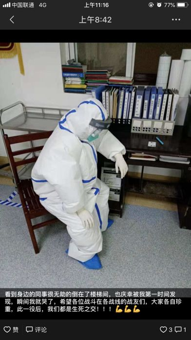

【武汉特稿】围城的第五天，灯火可亲 ｜ 舒飞廉_笔会 _ 文汇网
原文链接 备份链接 【武汉特稿】围城的第五天，灯火可亲 ｜ 舒飞廉 日期:2020年01月29日 08:22:39 作者:舒飞廉 早上起来，阴天，冷，窗外鸟儿鸣叫不停。九点来钟，出门去买菜。昨天市府发布了机动车限行令，没太看明白，还是自觉 …

湖北省黄冈市距武汉75公里，疫情仅次于武汉。在其下辖的浠水县，人们一直有着大年初一街道和垸里互相串门的习俗，因疫情封城后，这里的白天安静如夜晚。人们无聊且不安，正在慢慢适应禁足的日子。
 2020年1月25日
2020年1月25日
除夕时收到通知，今早，各家各户不能出门。从我记事至今28年，这是第一次，大年初一不用早起串门拜年。
早上睡到九点多起来，照例吃的是本地的特色饺子——包面。按照以前的惯例，吃完早饭，我就该打电话给远方的长辈拜年。但今天，我实在是没有任何心情，所以没有打。
因为不能出门，一家人只好坐在客厅，一边看电视，一边刷着手机。这是一家人整天最大的集体活动，不断盯着手机里四面八方传来的各种信息，确诊人数和疑似病例的数字一直不断上涨。
我家在黄冈市下辖的浠水县城，到武汉市中心的车程也就一个小时左右，很多老乡外出打工的第一选择即是武汉。看着那些数字，不可能不人心惶惶。
各种群里不知真假的消息不停地进来，说镇上的卫生院今天送了3个疑似病例到县里，又说县里送了4个到省里，都是现场拍的视频。随后，是封市、封镇、封乡的消息。
一整天，我家屋前县道上几乎看不到人，也没看到过车。自从1999年搬到这里，我还是第一次看到马路上这么清静，大白天的，安静地就像深夜一样，一种奇怪的感觉。我相信这条街上的其他人也都是这种感觉。
我买到了N95口罩，25元/只。买口罩的时候，我问药店的工作人员，在这次新型肺炎之前这种口罩卖多少钱。店主说，他在这里开了二十多年的药店，第一次卖这种口罩。
下午在家和爸妈打扑克，输了100多块，爸爸赢了。妈妈说，附近大多数本来准备办喜事酒宴的，都取消了。
晚上传来新的消息，武汉中心城区从今天夜里12点起，一般的机动车禁行，让人想到《鼠疫》里面的某些情节。
我把本来计划正月初五返程北京的高铁票退掉了，因为12306发来消息，车次已经停运，啥时候能回北京，就等通知吧。
有一种静叫做心慌。
今早，一个初中同学发来微信，说在家呆了几天之后，有些心慌。我先是开玩笑地安慰了几句，又觉得表达不妥，没再回复。
网上说，隔离区的人需要专业心理疏导，疫情过后，势必会在很多人心理留下或重或轻的影响。但这都是后话了，目前还是得主动隔离，我爸说，“这跟坐牢有什么区别”。
越来越多的村子和镇都被封闭，不准任何车辆出入。这对本地的日常生活有很大影响，我家还算好的，年前爸妈在小菜园摘回很多青菜和萝卜，提前做了些腊鱼肉。对于没有提前储备的人家来说，这两天恐怕有些难过。
街道上本来是有固定垃圾站的，但现在没人出门，很多人把垃圾堆在屋门外，等人来收。我家的垃圾昨天在门外堆了一天，今天才被收走，也不知道是什么时候收走的。
家对面有个小超市，过年本该是小超市一年中生意最红火的时候。每年这时候，各种拜年礼盒、烟酒、烟花爆竹都会从屋内摆到屋外。但今年，小超市没有开门。如果封城直到元宵节后，小超市提前预备的年货肯定不容易全数卖出。
吃午饭的时候看到一条视频，一位武汉户籍的中年男人站在酒店前台据理力争，从环境上可以看得出来，酒店的档次并不低。男人在该酒店住宿了一晚，第二晚，酒店前台奉命让男人退房，原因是，男人是武汉来的。男人解释自己只是户籍在武汉，多年没回武汉了，今年也没回过湖北。
还有一个段子，一个湖北武汉人被移出工作群，一位群友说，5G网速这么快，没一会儿病毒就会传过来的。
不知道写这个段子的人是怎么想的，反正我没觉得幽默。类似的事情一再发生，就不会让人觉得可笑。
吃完午饭，我爸想出去透透气，被我妈拉住了。
整条街道经过前两天的完全封闭，今天似乎有些松动。对面有几家的屋门已经打开，还有两三个人站在门口讲话。
两天没见到家人以外的任何人了，远远看到人，我的第一反应不是吐槽，而是想要仔细看看。“人声”这种之前很讨厌的东西也变得珍贵，甚至，我有想要出去走走，加入他们的冲动。
吃饭的时候，我爸给我看他在的村民微信群，群里好像起了争执。村里早就通知，不准聚会，不准串门。但村干部接到举报，某个人的家里有人聚集打牌。
以往过年，在我们镇上，打牌是家家户户必定进行的活动。从前我很反感，一大堆人聚集在一起，乌烟瘴气，看到就心烦。后来想，这些人要是不打牌能干啥，想来想去，还是打牌比较好。
即使在这样的非常时期，还是有人按耐不住，可见，他们对打牌是真爱。人活着，能拥有完全放松并沉浸其中的“真爱”，是很难的。
除夕晚上在淘宝买了10个口罩，今天看了看，还没发货，就退了。问了一下，到本地的物流停了，发不了货。微信上有很多人转口罩链接，网易湖北的专供口罩等等，我都点进去看了，要么卖完了，要么要等三四天才发货。幸亏家里还剩下几只，反正也不出门，买不到就算了吧。
看新闻发布会，提到湖北省口罩产能，省长两次自己纠正数据错误，让人不得不怀疑这些数字的真实性。
睡午觉的时候，隔壁镇的表哥打来视频电话，说家里六个月大的儿子身体不舒服，想买点药，但是他们镇上的药店都关了，让我爸帮忙去我们镇上的药店看看。
我们镇上的药店照常开着，但表哥发来的那几种药的名字，药店里都没有。我爸说，这很正常，之前我妈在武汉开的药，想回到镇上的卫生院买点，也都是没有的。我对不同级别的医院配备什么样的药品完全不了解，也没什么好说的。
晚饭，家里最后的一点菜薹下火锅吃完，没有一丁点儿青菜了。明天要戴好口罩，跟我妈去小菜园摘一些青菜回来屯着，必须出门了。
高中同学和我说，他家里的猫粮剩得不多了，不太好买。人吃啥都能对付一会儿，猫粮没了，猫怎么办呢。

2020年1月28日
小镇完全封闭的第四天，家门前的县道上，机动车明显多了，每隔几分钟就能看到一辆。但路上还是没有什么人，只有两三个人站在自家门前的空地上伸展身体，或是站着发呆。
虽说是封城、封村，但是直到今天，我所在的街道都没听到平时没事儿就喊起来了的大喇叭通知禁足。前三天的足不出户，完全靠自觉。相邻村镇的同学说，他们村还有三三两两聚在一起，不戴口罩四处闲逛的人。
身处此次新型肺炎疫情的重灾区，手机里四面八方汇集过来的信息实在太多。我有意减少了刷手机的次数，即使有些消息明显是假的，也会增加一分惊慌。
中午，好久没有动静的初中同学群里突然炸开了锅。一个在县中医院当医生的同学发出大量真实现场的照片和文字，正在紧急求援。
我们县此次抗击新型肺炎的主要阵地在县人民医院，而同学所在的中医院，昨天才被列入定点医院，医院三层楼的隔离病房已经住满，准备今天开第四层。目前，他们严重缺少相应的医疗护具，医护人员不分日夜地奋战多天，只睡了5、6个小时。他们无法下班，因为没有新的护具，即使其他人想接班的也没办法，在岗的医护人员已经穿了很多天尿不湿。

作者图 | 医生同学的朋友圈
根据官方给出的数字，黄冈市感染人数是200余例，我所在的县感染人数是3例。对于我们这个超过一百万人口的县来说，3例几乎是一个可以完全忽视的数字。但连不是最主要收治病患的中医院，病患都已住满了三层楼的隔离病房，那人民医院的确诊和疑似病例，真的是一个不敢想象的谜。
与一线医生所处艰难环境相反的是，在家待了三天的我，每天坐在沙发上看电视，竟还觉得身处的环境比较安全。
虽然感染人数不断上涨，好像也没真正威胁到自己，看着窗外晴好的天气，我产生一种错觉，似乎压力有一丝松动。
撰文 | 马亿
编辑｜刘妍

原文链接 备份链接 【武汉特稿】围城的第五天，灯火可亲 ｜ 舒飞廉 日期:2020年01月29日 08:22:39 作者:舒飞廉 早上起来，阴天，冷，窗外鸟儿鸣叫不停。九点来钟，出门去买菜。昨天市府发布了机动车限行令，没太看明白，还是自觉 …
原文链接 备份链接 “ 弟弟上夜班，一上就是十二个小时，每天的口罩需求量大，一天要生产几十万只。 1月23号，在武汉宣布封城后不久，黄冈也宣布在1月24号零点封城。这座紧挨着武汉的城市，有750万人口，从前它以“黄冈密卷”闻名，这次却也遭 …
原文链接 备份链接 2020.1.27 *这篇日记原定于昨天推送，无奈飞来横祸，唯一的笔记本进水，加上后续处理不当，目前屏幕无显示，touch bar也没反应，大概率硬件短路，赶上封城这种非常时期，致电客服，武汉和西安的维修点都停止营业， …
原文链接 备份链接 1月25日，湖北省襄阳市宣布暂停长途客运，自此，湖北省其他地级市已全部封锁。封城后的武汉面临物资紧缺问题，一夜间，全国各地发起驰援武汉行动，不断输送医疗资源至武汉。 在武汉周边，一些小城市及乡镇吸纳大量从武汉归来的返乡 …
原文链接 备份链接 今天是“武汉日常”每日书的第四篇，在孝感的学生写到当地村民自发拦路封村，尽管道路后面的横幅还写着他们希望并且欢迎在外乡亲回家；有在黄石的编剧路过黄石最繁华的步行街，发现那里几乎没有任何动静；有居住在武汉市区自愿帮助陌生 …